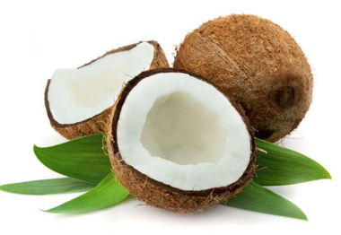

নারিকেলের পরিচিতি
নারিকেল একটি সুস্বাদু ফল। এর ইংরেজি নাম Coconut বৈজ্ঞানিক নাম হচ্ছে Cocos nucifera.
নারিকেল বাংলাদেশের অন্যতম একটি অর্থকরী ফসল। কাঁচা অবস্থায় একে ডাব বলা হয় যার পানি
অত্যন্ত সুস্বাদু ও পুষ্টিগুণে ভরপুর। পাকার পর এটাকে ঝুনা নারিকেল বলা হয়। বিশ্বের
প্রায় সব দেশেই নারিকেল খাওয়ার প্রচলন আছে। বাংলাদেশের সর্বত্রই নারিকেল গাছ জন্মায়।
তবে উপকূলীয় জেলাসমূহে বিশেষ করে খুলনা, বরিশাল, পটুয়াখালী, নোয়াখালী, ভোলা,
চট্টগ্রাম, ফরিদপুর ও যশোর জেলায় নারিকেলের উৎপাদন বেশি হয়।

নারিকেলের পুষ্টি উপাদান
প্রতি ১০০ গ্রাম নারকেলে আছে ৩৫৪ ক্যালরী, ৩৩ গ্রাম ফ্যাট, ২০ মিলিগ্রাম সোডিয়াম, ৩৫৬ মিলিগ্রাম পটাশিয়াম, ১৫ গ্রাম কার্বোহাইড্রেট ও ৩.৩ গ্রাম প্রোটিন আছে। এছাড়াও ভিটামিন সি, ক্যালসিয়াম, আয়রন, ম্যাগনেসিয়াম, ভিটামিন বি-৬ ও বি-১২ আছে।
নারিলের উপকারীতা
গবেষণায় দেখা গেছে যে পলিনেশিয়া ও শ্রীলঙ্কায় যেখানে প্রধান খাবার হলো নারিকেল
সেখানেকার মানুষের কোলেস্টেরল বা হার্টের সমস্যা অনেক কম। এর কারণ হিসেবে ব্যাখ্যা করা
হয়েছে নারিকেলে যে ফ্যাটি এসিডের চেইন গুলো আছে সেগুলো কোলেস্টেরল বাড়ায় না বরং
আথেরোসক্লেরোসিসের ঝুঁকি কমিয়ে হার্ট ভালো রাখতে সহায়তা করে। এমনকি কিছু কিছু
নারিকেলে লরিক এসিড পাওয়া গেছে যা মায়ের দুধে থাকে।
নারিকেল বিশেষ কিছু ভাইরাস ধ্বংস করে। যে সব ভাইরাস ইনফ্লুয়েঞ্জা, হার্পিস, মামস
ইত্যাদি রোগ জন্ম দেয়, নারিকেল সেসব ভাইরাস গুলোকে নষ্ট করে ফেলে। ফলে এধরণের
অসুখ-বিসুখ থেকে কিছুটা রক্ষা পাওয়া যায়।
আলসার, গলার ইনফেকশন, ইউরিন ইনফেকশন, মাড়ির রোগ, গনোরিয়া ইত্যাদি রোগ সৃষ্টিকারী
ব্যাকটেরিয়াগুলোকে ধ্বংস করতেও নারিকেলের ভূমিকা অপরিসীম।
নারিকেল শরীরের শক্তি বাড়িয়ে দেয় এবং কর্ম উদ্দিপনা জাগাতে সহায়তা করে।
হজম প্রক্রিয়ায় সহায়তা করে এবং বিভিন্ন ভিটামিন, মিনারেল ও এমিনো এসিট শোষন করে নিতে
সহায়তা করে।
নারিকেল রক্তের ইন্সুলিনের মাত্রা নিয়ন্ত্রনে রাখে এবং ডায়াবেটিস জনিত কারণে শরীরের
ক্ষতি রোধ করে।
নারিকেল শরীরে ক্যালসিয়াম ও ম্যাগনেসিয়াম গ্রহণ করতে সহায়তা করে এবং দাঁত ও হাড়ের
গঠনে ভূমিকা রাখে।
গলব্লাডারকে বিভিন্ন ধরণের অসুখ থেকে রক্ষা করতে নারিকেলের ভূমিকা অনেক।
নিয়মিত নারিকেল খেলে ব্রেস্ট ক্যান্সার, কোলন ক্যান্সার ও অন্যানো আরো কিছু
ক্যান্সারের ঝুঁকি কমে যায় অনেকখানি।
নারিকেল দাঁতের ক্ষয় রোধে সহায়তা করে।
নারিকেল প্রস্টেট গ্ল্যান্ড বড় হয়ে যাওয়া রোধ করতে ভূমিকা রাখে।
কিডনীতে পাথর আছে যাদের তাঁরা নিয়মিত খাবার তালিকায় নারিকেল রাখলে ধীরে ধীরে পাথর
মিলিয়ে যাওয়ার সম্ভাবনা থাকে।
নারিকেল থাইরয়েড হরমোনের কার্যক্রম স্বাভাবিক রাখতে সহায়তা করে।
নিয়মিত নারিকেল খেলে ত্বক কোমল ও সুন্দর হয়। এছাড়াও নিয়মিত নারিকেল খেলে ত্বকে সহজে
বয়স জনিত বলিরেখা পড়ে না।
নারিকেল অতিরিক্ত ওজন কমাকে সহায়তা করে। নারিকেল খুব অল্প ক্যালোরিতেই মেটাবলিজম
বৃদ্ধি করে অল্পক্ষণের মধ্যেই শরীরে শক্তি যোগায়। নারিকেল খেলে সহসা ক্ষুধাও লাগে না।
তাই গবেষনায় দেখা গেছে যে যারা নিয়মিত নারিকেল খাওয়া শুরু করে তাদের বেশ খানিকটা ওজন
হ্রাস পায়।